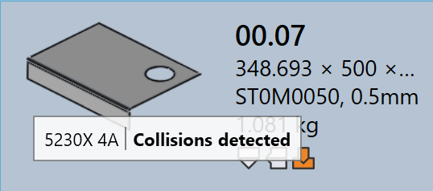

툴링 상태
TruSmartCAM 에서 각 부품 타일은 사용 가능한 모든 머신에 대한 해당 부품의 툴링 상태를 시각적으로 나타냅니다. 이를 통해 사용자는 부품이 어떤 머신에 대해 툴링되었는지, 그리고 툴링이 준비되었는지, 검토가 필요한지 또는 누락되었는지 빠르게 확인할 수 있습니다.
-
툴링 상태는 아이콘과 색상 표시기를 사용하여 부품 타일에 직접 표시됩니다.
-
각 아이콘은 머신 기술(예: Bend, Laser)을 나타냅니다.
-
아이콘의 색상은 해당 머신의 현재 툴링 상태를 나타냅니다.
아래 표는 각 아이콘과 색상의 의미를 설명하여 사용자가 툴링 상태를 정확하게 해석할 수 있도록 도와줍니다.

| Machine icon | Description |
|---|---|
|
레이저 절단 머신 |
|
프레스 브레이크 |
|
패널 벤더 |
| Tooling status | Description |
|---|---|
|
툴링 정상 |
|
툴링에 경고 있음 |
|
툴링에 오류 있음 |
|
툴링 사용 불가 |
툴링 오류
CAM(Computer-Aided Manufacturing) 오류는 툴링 또는 제조 준비 단계에서 발생합니다. 이러한 오류는 공구 충돌, 툴링 누락 또는 잘못된 절단 조건과 같은 문제로 인해 발생합니다.
다음 이미지는 툴링 중에 부품 타일에 표시될 수 있는 툴링 오류 상태의 예를 보여줍니다. 다음 섹션에서는 각 툴링 오류와 그 원인을 설명합니다.

밴딩 툴링 오류
-
Collisions detected 및 Gripper error : 밴딩 설정으로 인해 시뮬레이션 중에 공구 또는 그리퍼 충돌이 발생합니다.
-
Tool Overload 및 Narrow flange or hole too close : 밴드 공구가 과부하되었거나 구멍이 밴드 라인에 너무 가깝게 위치하여 부품이나 공구가 손상될 수 있습니다.
-
Needs review 및 Short Punch/Die span : 툴링 설정에 수동 검사가 필요하거나 선택한 die/punch 간격이 부품에 필요한 것보다 작습니다.
-
Tool Missing, Poor backguage 또는 Part too big for this machine : 필요한 밴딩 공구를 사용할 수 없거나 backgauge 가 제대로 구성되지 않았거나 부품이 선택한 머신에 비해 너무 큽니다.
절단 툴링 오류
-
Missing cutting condition : 절단 조건이 원자재에 매핑되지 않아 절단을 수행할 수 없습니다.
-
Untooled or partially tooled contours : 툴링 프로세스 중에 일부 형상이나 가장자리가 누락되거나 부분적으로만 덮여 부품이 절단에 불완전해집니다.